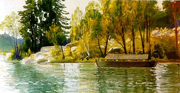

Södermalm i tid och rum
Ur Stockholmsliv, Staffan Tjerneld,1950
1862 förhyrdes Heleneborg av uppfinnaren Immanuel Nobel, som just återkommit till Sverige
efter tjugo år i Ryssland, utfattig, men med kejserlig guldmedalj på fickan. Följande år kom även Alfred Nobel till Stockholm och tog in hos föräldrarna
på Heleneborg. Alfred Nobel arbetade vid denna tid med de krut- och nitroglycerinblandningar, som
några år senare skulle föra till upptäckten av dynamiten. Sommaren 1864 hyrde fadern ett uthus vid
sjön nedanför Heleneborg, där ett laboratorium inrättades och de första experimenten gick av stapeln.
Redan efter någon månad, den 3 september, inträffade en svår explosion. Den lilla fabriken formligen
blåstes bort, och vid olyckan dödades Immanuel Nobels yngste son, Emil, jämte fyra andra personer.
Samma kväll kunde man i Posttidningen läsa, att »i huvudstaden förnam man olyckan genom den häftiga knallen och genom en stor, gul låga, som steg upp i luften, men som dock ögonblickligen efterträddes av en väldig rökpelare, vilken även efter en stunds förlopp försvann, så att, med undantag av de ovannämnda rutorna på Kungsholmen och någon oreda på månglerskornas salubord på Munkbron, man icke i staden hade något vidare men därav; -- men i stället mötte en så mycket hemskare syn vid framkomsten till stället, där olyckan skett. Av fabriken, som var av trä, låg strax bredvid Heleneborgs egendom och endast medelst en stenmur och ett obetydligt mellanrum var skild från densamma, återstod intet annat än några nedsvärtade spillror, kringkastade hit och dit. I alla de närliggande husen och även å dem, som voro belägna på andra sidan av sundet, voro icke allenast alla rutorna bortsprängda, utan fönsterkarmar, taklister med mera voro dels bortryckta, dels mer eller mindre skadade. Mest fasansfull var dock åsynen av de stympade människolik, som här och där lågo kringkastade. Icke nog med att kläderna voro avryckta, utan på en del var även huvudet borta, köttet på benpiporna avslitet, - med ett ord sagt, det var icke vanliga lik man fick se, utan formlösa massor av kött och ben, som hade föga eller ingen likhet med en människokropp. Om explosionens häftighet och förfärande verkan kan man döma därav, att i ett närbeläget stenhus de väggar, som vette åt fabriken, voro remnade och att en kvinna, som stod och lagade mat vid spisen därstädes, fick en del av huvudet krossat, ena armen avsliten och ena låret förfärligt skadat. Det olyckliga offret levde ännu och fördes på ett sofflock till lasarettet, mer lik en blodig köttmassa än en människa.»
| Sprängningsolyckan bröt ned den gamle Nobel, men Altred fortsatte. Efter händelserna vid Heleneborg hade staden förbjudit vidare fabrikation inom Stockholm, men då beställningar låg inne, bland annat från Statens järnvägar för tunneln under Södermalm, måste tillverkningen fortsätta. Första tiden skedde detta på en pråm förtöjd vid Mälarstranden, men redan följande år - 1865 - var fabriken vid Vinterviken i gång. |
 |